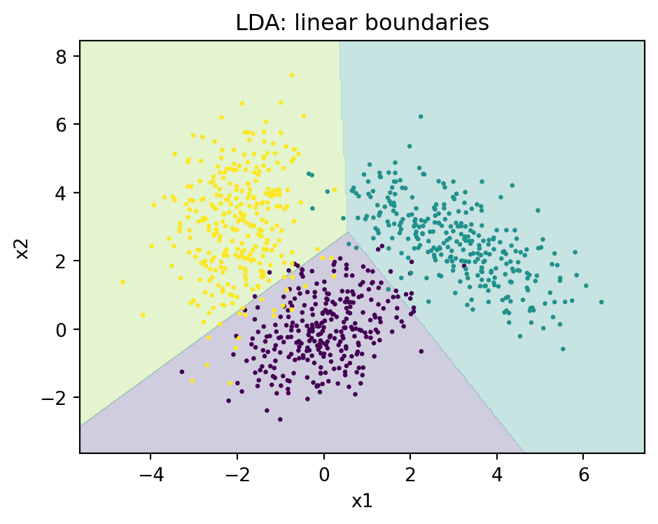
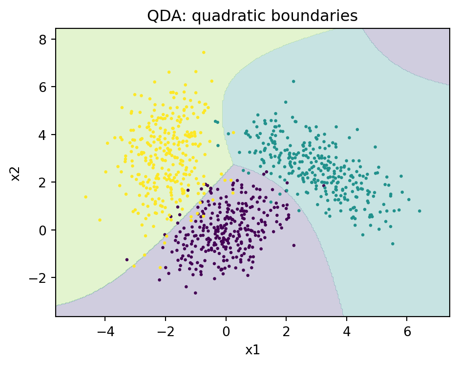
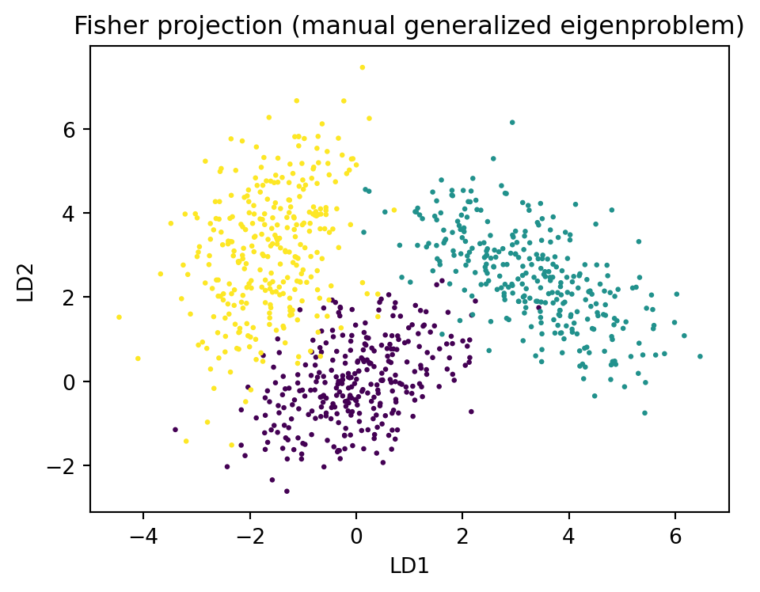

flowchart TD
X["Feature vector x"] --> P["Estimate class priors and Gaussian parameters"]
P --> F{"Shared covariance?"}
F -->|"Yes: Sigma common"| L["LDA: linear discriminant, hyperplane boundary"]
F -->|"No: Sigma per class"| Q["QDA: quadratic discriminant, quadric boundary"]
L --> D["Discriminant scores delta_k(x)"]
Q --> D
D --> A["Assign argmax over classes"]
A --> Y["Predicted label y"]
L -.->|"reuse S_W, S_B"| R["Fisher projection onto K-1 directions"]
R -.-> V["Visualization or reduced classifier"]
98 Discriminant Analysis
Discriminant analysis is a family of classification methods built on a simple generative premise: model how each class generates its features, then invert that model with Bayes rule to decide which class a new observation belongs to. The two canonical members, linear discriminant analysis (LDA) and quadratic discriminant analysis (QDA), arise from assuming that each class follows a multivariate Gaussian distribution. Despite their age, these methods remain workhorses in modern practice. They are fast, interpretable, require no iterative optimization, behave well in small samples, and double as a principled tool for supervised dimensionality reduction. This chapter develops the theory from the Gaussian class-conditional model, derives LDA both as a classifier and as a projection method, treats QDA and its bias variance tradeoff, and surveys regularized variants that make the methods usable in high dimensions.
98.1 1. The Generative Classification Setup
98.1.1 1.1 Bayes rule for classification
Suppose we observe a feature vector \(x \in \mathbb{R}^p\) and want to predict a class label \(y \in \{1, \dots, K\}\). A generative classifier models the joint distribution \(p(x, y)\) by specifying a class prior \(\pi_k = P(y = k)\) and a class-conditional density \(p(x \mid y = k)\). Bayes theorem then gives the posterior probability of each class:
\[ P(y = k \mid x) = \frac{\pi_k \, p(x \mid y = k)}{\sum_{j=1}^{K} \pi_j \, p(x \mid y = j)}. \]
The Bayes optimal decision rule assigns \(x\) to the class with the largest posterior. Because the denominator is shared across classes, we can equivalently maximize the numerator, and taking logarithms we maximize the discriminant score
\[ \delta_k(x) = \log p(x \mid y = k) + \log \pi_k. \]
Everything that distinguishes LDA from QDA from other generative classifiers lies in the choice of the class-conditional density \(p(x \mid y = k)\).
98.1.2 1.2 Generative versus discriminative
It is worth pausing on what we have committed to. Discriminative classifiers such as logistic regression model \(P(y \mid x)\) directly and never describe how \(x\) is distributed. Generative classifiers like discriminant analysis model the full \(p(x \mid y)\), which is a stronger and more falsifiable assumption. The payoff is that when the model is approximately correct, generative methods are more statistically efficient, meaning they need fewer training examples to reach a given accuracy. The risk is bias when the Gaussian assumption is badly violated. This tradeoff, characterized classically by Efron and later by Ng and Jordan, frames the entire chapter.
98.2 2. Gaussian Class-Conditionals
98.2.1 2.1 The multivariate normal model
Discriminant analysis assumes each class-conditional density is multivariate Gaussian:
\[ p(x \mid y = k) = \frac{1}{(2\pi)^{p/2} |\Sigma_k|^{1/2}} \exp\!\left( -\tfrac{1}{2} (x - \mu_k)^\top \Sigma_k^{-1} (x - \mu_k) \right), \]
with class mean \(\mu_k \in \mathbb{R}^p\) and class covariance \(\Sigma_k \in \mathbb{R}^{p \times p}\). Plugging this into the discriminant score and dropping the constant \(-\tfrac{p}{2}\log(2\pi)\) that is identical across classes gives
\[ \delta_k(x) = -\tfrac{1}{2} \log |\Sigma_k| - \tfrac{1}{2} (x - \mu_k)^\top \Sigma_k^{-1} (x - \mu_k) + \log \pi_k. \]
The term \((x - \mu_k)^\top \Sigma_k^{-1} (x - \mu_k)\) is the squared Mahalanobis distance from \(x\) to the class center, measured in the geometry induced by \(\Sigma_k\). Classification therefore amounts to assigning each point to the class whose center is nearest in Mahalanobis distance, adjusted by the log prior and the log determinant penalty.
98.3 3. Linear Discriminant Analysis
98.3.1 3.1 Deriving the linear discriminant
Set \(\Sigma_k = \Sigma\) for all \(k\). Expanding the Mahalanobis term,
\[ -\tfrac{1}{2}(x - \mu_k)^\top \Sigma^{-1} (x - \mu_k) = -\tfrac{1}{2} x^\top \Sigma^{-1} x + x^\top \Sigma^{-1} \mu_k - \tfrac{1}{2} \mu_k^\top \Sigma^{-1} \mu_k. \]
The quadratic term \(-\tfrac{1}{2} x^\top \Sigma^{-1} x\) and the log determinant \(-\tfrac{1}{2}\log|\Sigma|\) are now common to every class, so they vanish from the comparison. The discriminant becomes linear:
\[ \delta_k(x) = x^\top \Sigma^{-1} \mu_k - \tfrac{1}{2} \mu_k^\top \Sigma^{-1} \mu_k + \log \pi_k = w_k^\top x + b_k, \]
with weight vector \(w_k = \Sigma^{-1} \mu_k\) and intercept \(b_k = -\tfrac{1}{2} \mu_k^\top \Sigma^{-1} \mu_k + \log \pi_k\). The decision boundary between any two classes \(k\) and \(\ell\) is the set where \(\delta_k(x) = \delta_\ell(x)\), which is a hyperplane. LDA thus partitions feature space into convex polyhedral regions.
To see the cancellation explicitly, subtract the two discriminants. Both carry the same \(-\tfrac{1}{2} x^\top \Sigma^{-1} x\) term, so their difference is
\[ \delta_k(x) - \delta_\ell(x) = x^\top \Sigma^{-1} (\mu_k - \mu_\ell) - \tfrac{1}{2}(\mu_k - \mu_\ell)^\top \Sigma^{-1} (\mu_k + \mu_\ell) + \log \frac{\pi_k}{\pi_\ell}. \]
There is no surviving term quadratic in \(x\). The boundary \(\delta_k(x) = \delta_\ell(x)\) is the affine hyperplane with normal \(\Sigma^{-1}(\mu_k - \mu_\ell)\) passing through a point determined by the midpoint of the means and the prior offset. The quadratic cancellation is precisely what the SymPy check in the code section below confirms symbolically.
98.3.2 3.1a A worked two-class example
Take a one dimensional problem with \(\Sigma = \sigma^2\), equal priors \(\pi_1 = \pi_0 = \tfrac{1}{2}\), and means \(\mu_0, \mu_1\). The discriminant difference reduces to
\[ \delta_1(x) - \delta_0(x) = \frac{(\mu_1 - \mu_0)}{\sigma^2}\,x - \frac{\mu_1^2 - \mu_0^2}{2\sigma^2}, \]
which is zero at the midpoint \(x^\star = \tfrac{1}{2}(\mu_0 + \mu_1)\). With equal priors and equal variance the LDA threshold sits exactly halfway between the class means, the intuitive answer. Now give class 1 a higher prior: the \(\log(\pi_1/\pi_0)\) term shifts the threshold toward \(\mu_0\), enlarging the region assigned to the more common class. Plugging in \(\mu_0 = 0\), \(\mu_1 = 2\), \(\sigma^2 = 1\), \(\pi_1 = 0.7\) gives threshold \(x^\star = 1 - \tfrac{1}{2}\log(0.7/0.3) \approx 0.576\), shifted left of the midpoint \(1.0\) as expected.
98.3.3 3.2 Parameter estimation
We fit LDA by maximum likelihood, which yields intuitive plug-in estimators. Let \(N_k\) be the number of training points in class \(k\) and \(N\) the total. Then
\[ \hat{\pi}_k = \frac{N_k}{N}, \qquad \hat{\mu}_k = \frac{1}{N_k} \sum_{i: y_i = k} x_i, \]
and the pooled within-class covariance is
\[ \hat{\Sigma} = \frac{1}{N - K} \sum_{k=1}^{K} \sum_{i: y_i = k} (x_i - \hat{\mu}_k)(x_i - \hat{\mu}_k)^\top. \]
The divisor \(N - K\) gives an unbiased estimate. Note that LDA estimates one covariance from all classes jointly, pooling information, whereas QDA must estimate \(K\) separate covariances. This is the source of LDA’s robustness in small samples.
# LDA fit, schematic (not executable as written)
pi[k] = N_k / N
mu[k] = mean(X[y == k], axis=0)
Sigma = pooled_within_class_covariance(X, y) # divisor N - K
Sigma_inv = inv(Sigma)
w[k] = Sigma_inv @ mu[k]
b[k] = -0.5 * mu[k] @ Sigma_inv @ mu[k] + log(pi[k])
# predict: argmax_k (w[k] @ x + b[k])98.3.4 3.3 Connection to logistic regression
For two classes, the LDA log posterior odds are
\[ \log \frac{P(y = 1 \mid x)}{P(y = 0 \mid x)} = (w_1 - w_0)^\top x + (b_1 - b_0), \]
which is linear in \(x\), exactly the functional form logistic regression assumes. The two methods differ only in how they estimate the coefficients. LDA fits them through the Gaussian moment estimates, implicitly using the marginal density of \(x\), while logistic regression fits them by conditional maximum likelihood. When the Gaussian assumption holds, LDA is more efficient. When it does not, logistic regression is more robust because it never relies on the shape of \(p(x)\).
98.4 4. LDA as Dimensionality Reduction
98.4.1 4.1 The Fisher criterion
LDA has a second life as a supervised projection method, and remarkably the projection it produces coincides with the classifier above. Fisher posed the problem without any Gaussian assumption: find a direction \(a \in \mathbb{R}^p\) such that projecting the data onto \(a\) maximally separates the classes. Separation is quantified by the ratio of between-class scatter to within-class scatter. Define the within-class scatter matrix \(S_W\) and the between-class scatter matrix \(S_B\):
\[ S_W = \sum_{k=1}^{K} \sum_{i: y_i = k} (x_i - \hat{\mu}_k)(x_i - \hat{\mu}_k)^\top, \qquad S_B = \sum_{k=1}^{K} N_k (\hat{\mu}_k - \hat{\mu})(\hat{\mu}_k - \hat{\mu})^\top, \]
where \(\hat{\mu}\) is the overall mean. The Fisher criterion seeks
\[ a^\star = \arg\max_a \frac{a^\top S_B \, a}{a^\top S_W \, a}. \]
98.4.2 4.2 Solving the generalized eigenproblem
The ratio is a generalized Rayleigh quotient, and its stationary points satisfy the generalized eigenvalue problem
\[ S_B \, a = \lambda \, S_W \, a. \]
The leading eigenvectors of \(S_W^{-1} S_B\) give the discriminant directions, ordered by eigenvalue. Because \(S_B\) has rank at most \(K - 1\) (the class means span an affine subspace of that dimension), there are at most \(K - 1\) informative directions. This is a hard ceiling: a ten class problem yields at most nine LDA components regardless of how many original features there were. Projecting onto these directions and then classifying in the reduced space is exactly equivalent to the Gaussian LDA classifier with shared covariance, which ties the generative and the geometric views together.
To derive the eigenproblem, write the Rayleigh quotient \(J(a) = \dfrac{a^\top S_B a}{a^\top S_W a}\). Because \(J\) is invariant to the scale of \(a\), we may fix the denominator and maximize the numerator subject to \(a^\top S_W a = 1\). The Lagrangian is
\[ \mathcal{L}(a, \lambda) = a^\top S_B a - \lambda\,(a^\top S_W a - 1). \]
Setting the gradient to zero, \(\nabla_a \mathcal{L} = 2 S_B a - 2\lambda S_W a = 0\), yields exactly the generalized eigenproblem \(S_B a = \lambda S_W a\). Left multiplying the stationarity condition by \(a^\top\) shows \(a^\top S_B a = \lambda\, a^\top S_W a\), so \(J(a) = \lambda\) at any stationary point. The maximum of the criterion is therefore the largest generalized eigenvalue, and its eigenvector is the first discriminant direction. When \(S_W\) is invertible the problem is equivalent to the ordinary eigenproblem \(S_W^{-1} S_B a = \lambda a\), though in practice one solves it through a symmetric whitening of \(S_W\) to keep numerics stable.
For the two-class case the algebra collapses to a closed form. Here \(S_B = N_0 N_1 / N \cdot (\mu_1 - \mu_0)(\mu_1 - \mu_0)^\top\) is rank one, so \(S_B a\) always points along \((\mu_1 - \mu_0)\), and the single nontrivial solution is
\[ a^\star \propto S_W^{-1} (\mu_1 - \mu_0). \]
This is the same direction as the LDA weight difference \(\Sigma^{-1}(\mu_1 - \mu_0)\) up to the scalar relating \(S_W\) to the pooled \(\hat{\Sigma}\), which is the concrete sense in which the Fisher projection and the Gaussian classifier coincide.
98.4.3 4.3 Practical use as a reducer
As a preprocessing step, LDA differs from principal component analysis in a fundamental way: PCA is unsupervised and finds directions of maximal total variance, while LDA is supervised and finds directions of maximal class separability. When the discriminative signal lies in a low variance direction that PCA would discard, LDA can preserve it. A common pipeline applies PCA first to denoise and reduce dimension below \(N\), then LDA for the final class aware projection, often feeding a downstream classifier or a two dimensional visualization.
# LDA as a reducer, schematic
S_W = within_class_scatter(X, y)
S_B = between_class_scatter(X, y)
eigvals, eigvecs = generalized_eig(S_B, S_W) # solve S_B a = lambda S_W a
A = eigvecs[:, :K-1] # at most K-1 columns
Z = X @ A # projected, separable coordinates98.5 5. Quadratic Discriminant Analysis
98.5.1 5.1 The quadratic boundary
When we drop the shared covariance assumption and let each class keep its own \(\Sigma_k\), the quadratic and log determinant terms no longer cancel. The discriminant retains its full form,
\[ \delta_k(x) = -\tfrac{1}{2}\log|\Sigma_k| - \tfrac{1}{2}(x - \mu_k)^\top \Sigma_k^{-1}(x - \mu_k) + \log \pi_k, \]
and the decision boundary between two classes is now a quadric surface (an ellipsoid, paraboloid, or hyperboloid) rather than a hyperplane. QDA can therefore model situations where classes have different orientations, spreads, or correlation structures, which LDA cannot represent.
98.5.2 5.2 Estimation and the bias variance tradeoff
QDA estimates a separate covariance per class:
\[ \hat{\Sigma}_k = \frac{1}{N_k - 1} \sum_{i: y_i = k} (x_i - \hat{\mu}_k)(x_i - \hat{\mu}_k)^\top. \]
This flexibility carries a cost in parameters. Each covariance has \(p(p+1)/2\) free entries, so QDA estimates roughly \(K\) times as many covariance parameters as LDA. When \(p\) is large or some class is small, \(\hat{\Sigma}_k\) becomes noisy or even singular, and the resulting classifier has high variance. The practical guidance is direct: prefer QDA when classes plainly have different covariance structure and each class has abundant data, prefer LDA when data is scarce relative to dimension or when the homoscedasticity assumption is reasonable. QDA reduces bias at the expense of variance, and the right choice depends on which dominates the error for the problem at hand.
98.6 6. Regularized and High Dimensional Variants
98.6.1 6.1 Why regularization is needed
In modern settings \(p\) can rival or exceed \(N\). The pooled covariance \(\hat{\Sigma}\) is then ill conditioned or singular, its inverse is undefined or unstable, and the Mahalanobis distance blows up. Even when \(\hat{\Sigma}\) is technically invertible, its small eigenvalues are estimated with enormous relative error and dominate \(\Sigma^{-1}\), corrupting the discriminant. Regularization restores stability by shrinking the covariance estimate toward a simpler, better conditioned target.
98.6.2 6.2 Regularized discriminant analysis
Friedman’s regularized discriminant analysis (RDA) interpolates continuously between QDA, LDA, and a nearest centroid rule using two parameters. First shrink each class covariance toward the pooled covariance,
\[ \hat{\Sigma}_k(\alpha) = \alpha \, \hat{\Sigma}_k + (1 - \alpha)\, \hat{\Sigma}, \]
which slides between QDA at \(\alpha = 1\) and LDA at \(\alpha = 0\). Then shrink the result toward a scaled identity,
\[ \hat{\Sigma}_k(\alpha, \gamma) = (1 - \gamma)\, \hat{\Sigma}_k(\alpha) + \gamma \, \frac{\operatorname{tr}(\hat{\Sigma}_k(\alpha))}{p} \, I, \]
which pulls the eigenvalues toward their average and guarantees invertibility. The pair \((\alpha, \gamma)\) is chosen by cross validation, letting the data decide how much class specific structure and how much shrinkage the sample can support.
98.6.3 6.3 Shrinkage covariance and other extensions
A related and now standard idea estimates the pooled covariance itself by shrinkage. The Ledoit and Wolf estimator forms a convex combination of the sample covariance and a structured target and derives the mixing weight analytically to minimize expected squared error, with no cross validation needed. Plugging a Ledoit Wolf estimate into the LDA formulas yields a robust classifier that is often the default in high dimensional pipelines.
Several further extensions are worth knowing. Diagonal LDA, which assumes \(\Sigma\) is diagonal, ignores feature correlations entirely and is the Gaussian naive Bayes classifier; it is surprisingly strong when \(p \gg N\), as in genomics. Sparse discriminant analysis adds an \(\ell_1\) penalty so that the discriminant directions use only a subset of features, combining classification with feature selection. Mixture discriminant analysis models each class as a mixture of Gaussians rather than a single Gaussian, relaxing the unimodality assumption while keeping the generative structure.
98.6.4 6.4 Practical workflow
A pragmatic recipe ties these pieces together. Standardize features so that the Mahalanobis geometry is not dominated by units. Check class balance and adjust priors if the training proportions do not match deployment. Start with plain LDA as a strong, low variance baseline. If diagnostics suggest unequal class covariances and data is plentiful, try QDA. If \(p\) is large relative to \(N\), reach for shrinkage LDA or RDA and tune by cross validation. When interpretation or visualization is the goal, use the \(K - 1\) dimensional Fisher projection. Throughout, remember that the linear or quadratic form of the boundary is an assumption to be validated, not a law, and that a misspecified Gaussian model is exactly where a discriminative method may serve you better.
98.7 7. The Decision Pipeline at a Glance
The following diagram traces a feature vector through the generative model to a class label, and shows where the LDA versus QDA fork sits.
98.8 8. Computational Walkthrough
We now make the theory concrete: fit LDA and QDA on a synthetic three-class problem, contrast their decision regions, compute the Fisher projection by hand through the generalized eigenproblem, and verify symbolically that equal covariance kills the quadratic term in the LDA boundary.
The executable cell below fixes a seed, fits both classifiers, produces three figures (LDA regions, QDA regions, Fisher projection), prints a results DataFrame, and runs a SymPy check confirming the LDA boundary is linear under shared covariance.
Code
import numpy as np
import pandas as pd
import matplotlib.pyplot as plt
import sympy as sp
from sklearn.discriminant_analysis import (
LinearDiscriminantAnalysis,
QuadraticDiscriminantAnalysis,
)
from sklearn.model_selection import train_test_split
from sklearn.metrics import accuracy_score
rng = np.random.default_rng(20260620)
# Three Gaussian classes with deliberately unequal covariances
means = [np.array([0.0, 0.0]), np.array([3.0, 2.5]), np.array([-2.0, 3.0])]
covs = [
np.array([[1.0, 0.4], [0.4, 1.0]]),
np.array([[1.6, -0.9], [-0.9, 1.2]]),
np.array([[0.6, 0.2], [0.2, 2.2]]),
]
n_per = 300
X = np.vstack([rng.multivariate_normal(m, c, n_per) for m, c in zip(means, covs)])
y = np.repeat([0, 1, 2], n_per)
Xtr, Xte, ytr, yte = train_test_split(X, y, test_size=0.3, random_state=0, stratify=y)
lda = LinearDiscriminantAnalysis(store_covariance=True).fit(Xtr, ytr)
qda = QuadraticDiscriminantAnalysis(store_covariance=True).fit(Xtr, ytr)
results = pd.DataFrame(
{
"model": ["LDA", "QDA"],
"train_acc": [
accuracy_score(ytr, lda.predict(Xtr)),
accuracy_score(ytr, qda.predict(Xtr)),
],
"test_acc": [
accuracy_score(yte, lda.predict(Xte)),
accuracy_score(yte, qda.predict(Xte)),
],
"n_params_cov": [
covs[0].size // 2 + covs[0].shape[0], # one shared covariance
3 * (covs[0].size // 2 + covs[0].shape[0]), # three covariances
],
}
)
results["train_acc"] = results["train_acc"].round(4)
results["test_acc"] = results["test_acc"].round(4)
print("Classifier comparison")
print(results.to_string(index=False))
# Decision region helper
def region_plot(ax, model, title):
xx, yy = np.meshgrid(
np.linspace(X[:, 0].min() - 1, X[:, 0].max() + 1, 300),
np.linspace(X[:, 1].min() - 1, X[:, 1].max() + 1, 300),
)
grid = np.c_[xx.ravel(), yy.ravel()]
zz = model.predict(grid).reshape(xx.shape)
ax.contourf(xx, yy, zz, alpha=0.25, levels=[-0.5, 0.5, 1.5, 2.5])
ax.scatter(X[:, 0], X[:, 1], c=y, s=6, edgecolor="none")
ax.set_title(title)
ax.set_xlabel("x1")
ax.set_ylabel("x2")
fig1, ax1 = plt.subplots(figsize=(5, 4))
region_plot(ax1, lda, "LDA: linear boundaries")
fig1.tight_layout()
plt.show()
fig2, ax2 = plt.subplots(figsize=(5, 4))
region_plot(ax2, qda, "QDA: quadratic boundaries")
fig2.tight_layout()
plt.show()
# Fisher projection computed by hand via the generalized eigenproblem
def scatter_matrices(X, y):
classes = np.unique(y)
p = X.shape[1]
mu = X.mean(axis=0)
S_W = np.zeros((p, p))
S_B = np.zeros((p, p))
for k in classes:
Xk = X[y == k]
muk = Xk.mean(axis=0)
S_W += (Xk - muk).T @ (Xk - muk)
d = (muk - mu).reshape(-1, 1)
S_B += len(Xk) * (d @ d.T)
return S_W, S_B
S_W, S_B = scatter_matrices(X, y)
eigvals, eigvecs = np.linalg.eig(np.linalg.solve(S_W, S_B))
order = np.argsort(eigvals.real)[::-1]
A = eigvecs[:, order[:2]].real # K - 1 = 2 directions
Z = X @ A
print("\nTop generalized eigenvalues (separation per direction):")
print(np.round(eigvals.real[order][:2], 4))
fig3, ax3 = plt.subplots(figsize=(5, 4))
ax3.scatter(Z[:, 0], Z[:, 1], c=y, s=6, edgecolor="none")
ax3.set_title("Fisher projection (manual generalized eigenproblem)")
ax3.set_xlabel("LD1")
ax3.set_ylabel("LD2")
fig3.tight_layout()
plt.show()
# SymPy: verify the LDA two-class boundary is linear under shared covariance
x1, x2 = sp.symbols("x1 x2", real=True)
s11, s12, s22 = sp.symbols("s11 s12 s22", real=True)
m1a, m1b, m0a, m0b = sp.symbols("m1a m1b m0a m0b", real=True)
xv = sp.Matrix([x1, x2])
Sigma = sp.Matrix([[s11, s12], [s12, s22]])
Sinv = Sigma.inv()
mu1 = sp.Matrix([m1a, m1b])
mu0 = sp.Matrix([m0a, m0b])
def maha(x, mu):
d = x - mu
return (d.T * Sinv * d)[0]
# Shared Sigma: difference of discriminants
diff = sp.expand(-sp.Rational(1, 2) * maha(xv, mu1) + sp.Rational(1, 2) * maha(xv, mu0))
deg_x1 = sp.Poly(sp.together(diff).as_numer_denom()[0], x1).degree()
deg_x2 = sp.Poly(sp.together(diff).as_numer_denom()[0], x2).degree()
print("\nSymPy check (shared covariance):")
print(" LDA boundary degree in x1:", deg_x1, "| degree in x2:", deg_x2)
print(" Linear boundary confirmed:", deg_x1 == 1 and deg_x2 == 1)
# Contrast: distinct covariances leave a quadratic term
t11, t12, t22 = sp.symbols("t11 t12 t22", real=True)
Tinv = sp.Matrix([[t11, t12], [t12, t22]]).inv()
diff_q = sp.expand(
-sp.Rational(1, 2) * (xv - mu1).T * Tinv * (xv - mu1)
+ sp.Rational(1, 2) * (xv - mu0).T * Sinv * (xv - mu0)
)[0]
num_q = sp.together(diff_q).as_numer_denom()[0]
print(" QDA boundary degree in x1:", sp.Poly(num_q, x1).degree(), "(quadratic expected)")Classifier comparison
model train_acc test_acc n_params_cov
LDA 0.9492 0.9556 4
QDA 0.9508 0.9704 12

Top generalized eigenvalues (separation per direction):
[3.9773 1.1717]
SymPy check (shared covariance):
LDA boundary degree in x1: 1 | degree in x2: 1
Linear boundary confirmed: True
QDA boundary degree in x1: 2 (quadratic expected)using MultivariateStats, Random, Statistics
Random.seed!(20260620)
means = [[0.0, 0.0], [3.0, 2.5], [-2.0, 3.0]]
covs = [[1.0 0.4; 0.4 1.0], [1.6 -0.9; -0.9 1.2], [0.6 0.2; 0.2 2.2]]
nper = 300
X = hcat([rand_mvn(m, c, nper) for (m, c) in zip(means, covs)]...) # 2 x N
y = vcat([fill(k, nper) for k in 0:2]...)
# Multiclass LDA: solves the same generalized eigenproblem S_B a = lambda S_W a
model = fit(MulticlassLDA, X, y; outdim = 2)
Z = predict(model, X) # K-1 dimensional Fisher coordinates
# Helper for correlated Gaussian draws
function rand_mvn(mu, Sigma, n)
L = cholesky(Symmetric(Sigma)).L
return mu .+ L * randn(length(mu), n)
end
println("Projected size: ", size(Z)) # (2, N): the two discriminant axes// Fisher direction for the two-class case: a = S_W^{-1} (mu1 - mu0)
// Using nalgebra for the linear algebra.
use nalgebra::{DMatrix, DVector};
fn scatter_within(x: &DMatrix<f64>, y: &[usize], k: usize) -> DMatrix<f64> {
let p = x.ncols();
let mut s_w = DMatrix::<f64>::zeros(p, p);
for class in 0..k {
let rows: Vec<usize> = y.iter().enumerate()
.filter(|(_, &c)| c == class).map(|(i, _)| i).collect();
let mean = rows.iter().fold(DVector::zeros(p), |acc, &i| acc + x.row(i).transpose())
/ rows.len() as f64;
for &i in &rows {
let d = x.row(i).transpose() - &mean;
s_w += &d * d.transpose();
}
}
s_w
}
fn fisher_two_class(x: &DMatrix<f64>, y: &[usize]) -> DVector<f64> {
let p = x.ncols();
let s_w = scatter_within(x, y, 2);
let mu1 = class_mean(x, y, 1);
let mu0 = class_mean(x, y, 0);
let diff = mu1 - mu0;
s_w.try_inverse().expect("S_W singular") * diff // discriminant direction
}
fn class_mean(x: &DMatrix<f64>, y: &[usize], k: usize) -> DVector<f64> {
let p = x.ncols();
let rows: Vec<usize> = y.iter().enumerate()
.filter(|(_, &c)| c == k).map(|(i, _)| i).collect();
rows.iter().fold(DVector::zeros(p), |acc, &i| acc + x.row(i).transpose())
/ rows.len() as f64
}98.9 9. Summary
Discriminant analysis flows from one idea: assume Gaussian class-conditionals and apply Bayes rule. A shared covariance gives the linear boundaries and efficient estimation of LDA, which doubles as the Fisher supervised projection onto at most \(K - 1\) separating directions. Class specific covariances give the curved boundaries of QDA, trading lower bias for higher variance and a heavier parameter burden. Between and around these poles sit the regularized methods, RDA, shrinkage LDA, diagonal and sparse variants, that adapt the bias variance balance to the sample at hand. The methods are computationally trivial, interpretable, and competitive, and their tight connection to logistic regression and to Gaussian theory makes them a foundational part of any classification toolkit.
98.10 References
- Hastie, T., Tibshirani, R., and Friedman, J. The Elements of Statistical Learning, 2nd ed., Springer, 2009. https://hastie.su.domains/ElemStatLearn/
- Friedman, J. H. Regularized Discriminant Analysis. Journal of the American Statistical Association, 1989. https://www.tandfonline.com/doi/abs/10.1080/01621459.1989.10478752
- Fisher, R. A. The Use of Multiple Measurements in Taxonomic Problems. Annals of Eugenics, 1936. https://onlinelibrary.wiley.com/doi/10.1111/j.1469-1809.1936.tb02137.x
- Ledoit, O. and Wolf, M. A Well Conditioned Estimator for Large Dimensional Covariance Matrices. Journal of Multivariate Analysis, 2004. https://www.sciencedirect.com/science/article/pii/S0047259X03000964
- Ng, A. Y. and Jordan, M. I. On Discriminative vs. Generative Classifiers. Advances in Neural Information Processing Systems, 2001. https://papers.nips.cc/paper/2020-on-discriminative-vs-generative-classifiers-a-comparison-of-logistic-regression-and-naive-bayes
- Bishop, C. M. Pattern Recognition and Machine Learning, Springer, 2006. https://www.microsoft.com/en-us/research/publication/pattern-recognition-machine-learning/
- Clemmensen, L., Hastie, T., Witten, D., and Ersboll, B. Sparse Discriminant Analysis. Technometrics, 2011. https://www.tandfonline.com/doi/abs/10.1198/TECH.2011.08118
- scikit-learn Developers. Linear and Quadratic Discriminant Analysis. scikit-learn User Guide. https://scikit-learn.org/stable/modules/lda_qda.html